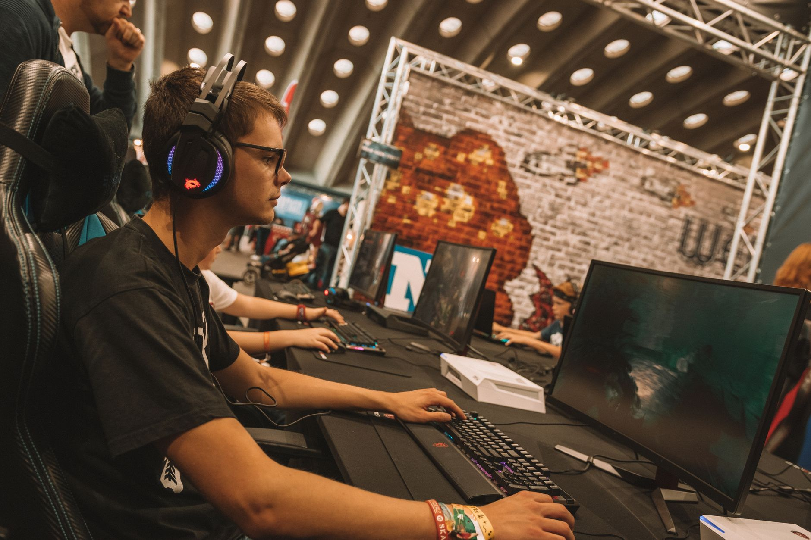

The sudden surge in fantasy popularity
As the IEM Beijing playoffs approach, the fantasy gaming community is undergoing a significant shift in strategy. According to recent data, two specific players have seen an unprecedented spike in selection rates. This trend is not just a coincidence but a reflection of recent high-level performances that have caught the attention of analysts and casual fans alike.
The surge is primarily driven by the intense competitive atmosphere surrounding the tournament. Fans are no longer just watching for entertainment; they are actively participating in the ecosystem through fantasy leagues. This engagement has turned individual player performances into a high-stakes game of prediction and statistical analysis.
Why w0nderful is a top pick
w0nderful has long been recognized as a cornerstone of his team, but his recent form has made him almost essential for any serious fantasy lineup. His ability to deliver clutch moments under pressure has translated into high statistical output, making him a dream for those looking to maximize their fantasy points.
His versatility across different maps and roles allows him to maintain a high level of consistency. Whether it is opening duels or holding crucial sites, his impact on the round outcome is measurable and frequent. This reliability is exactly what fantasy managers crave when building a roster for a major playoff run.
The consistency shown by players like w0nderful is what separates the elite fantasy picks from the risky gambles in major tournaments.
The rise of b1t in the playoffs
On the other side of the spectrum, b1t has seen a meteoric rise in popularity. Known for his incredible mechanical skill and aggressive playstyle, he has become a magnet for fantasy enthusiasts. As the IEM Beijing playoffs unfold, his ability to break through even the toughest defensive setups has become a deciding factor in many matches.
The data suggests that b1t's popularity is linked to his high kill-to-death ratio in recent series. In the world of fantasy esports, high-impact players who can secure multiple kills per round are the gold standard. His presence on the server often dictates the momentum of the game, providing a reliable source of points for his supporters.
Analyzing the impact on fantasy strategy
This shift in player popularity changes how managers approach their entire roster. When heavy hitters like w0nderful and b1t become widely selected, the 'value' of other players shifts. Managers must now decide whether to follow the crowd or find undervalued players who can provide a competitive edge.
The strategy often involves balancing high-cost superstars with budget-friendly players who are currently in form. As the IEM Beijing playoffs progress, we can expect more volatility in these rankings. A single bad performance can see a player's popularity plummet, while a breakout star can change the landscape overnight.
Looking ahead to the tournament conclusion
As we move deeper into the tournament, the stakes for both the players and the fantasy enthusiasts will only increase. Every map played and every round won contributes to the legacy of the players and the success of the fans playing along. The momentum built by w0nderful and b1t could carry them through to the very end of the competition.
For those following the competitive structure, it is important to stay updated on how the teams are progressing through the stages. Understanding the matchups is just as important as knowing individual player stats. To get a better idea of the tournament flow, you should check out our recent breakdown on the IEM Beijing 2026 Playoff Bracket Set: Top Teams Clash at https://dhyey.bond/blog/iem-beijing-2026-playoff-bracket-set-top-teams-clash/.
Stay tuned to our blog for more updates on player trends, match results, and expert analysis as the IEM Beijing playoffs continue to unfold.
See Also
If you enjoyed this Esports News article, check out IEM Beijing 2026 Playoff Bracket Set: Top Teams Clash for more useful reading.